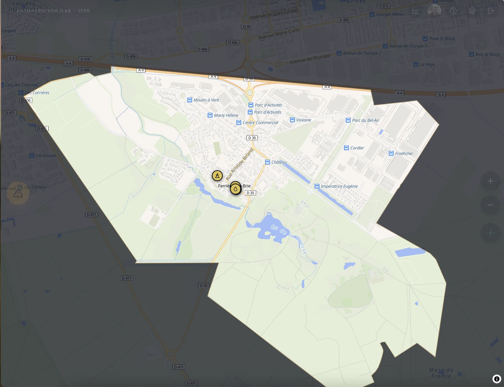
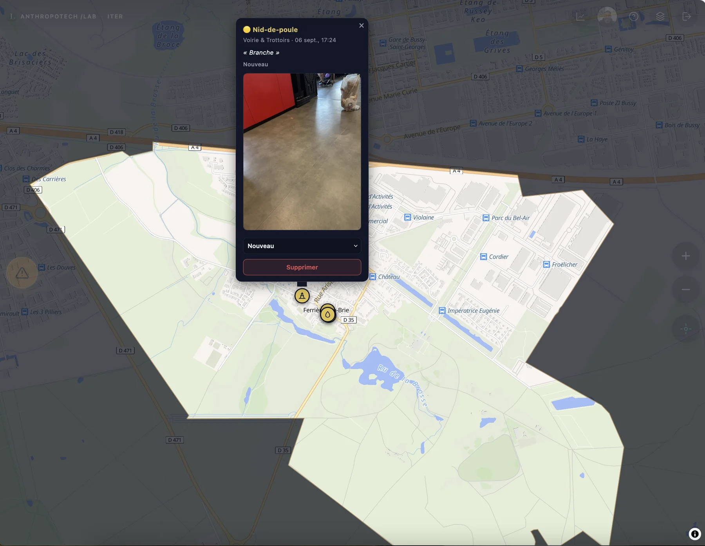
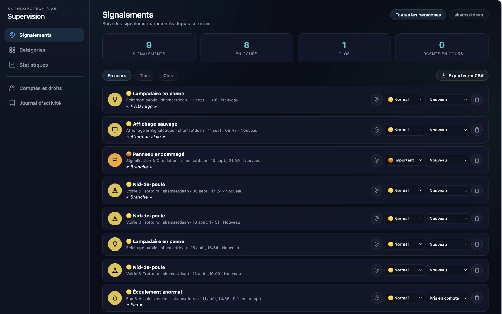
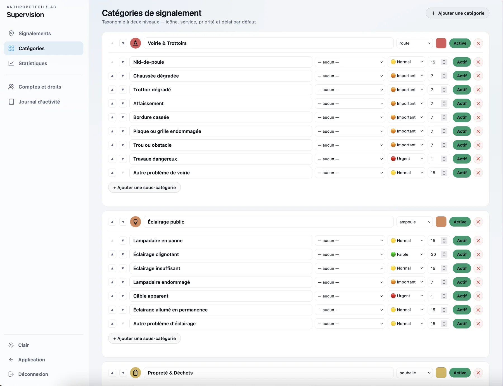
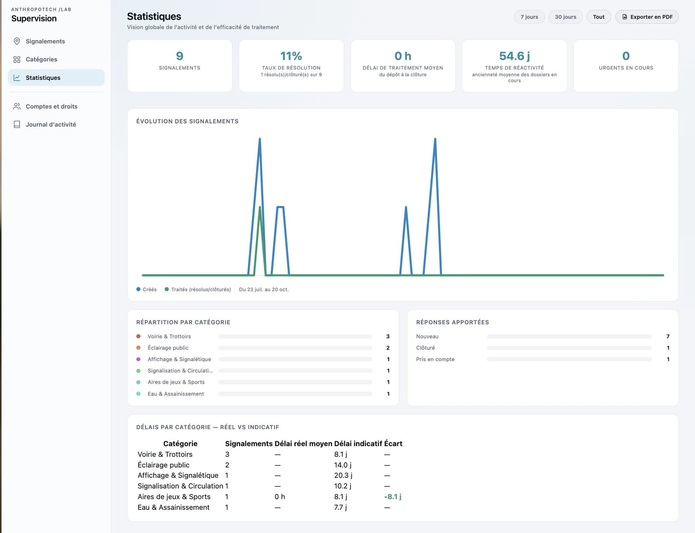
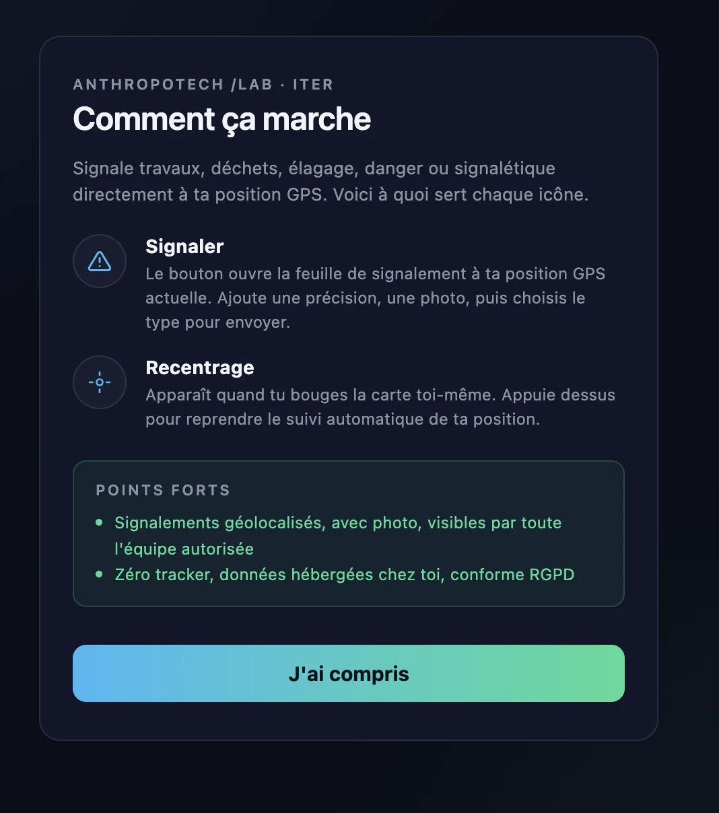

Repérer
Toute la commune, d'un coup d'œil.
Le périmètre de la commune est délimité sur la carte. Chaque signalement y apparaît à sa position exacte, avec une icône qui indique son type.
Nos communes en commun
Chaque anomalie du terrain, signalée puis suivie jusqu'à sa résolution.

Un trottoir abîmé. Une branche dangereuse. Un panneau tombé. Aujourd'hui, ces informations circulent par un appel, un message, un papier oublié. iter les rassemble sur une seule carte, avec une position précise, une photo et un statut pour chacune.
1 sur 5
Repérer
Le périmètre de la commune est délimité sur la carte. Chaque signalement y apparaît à sa position exacte, avec une icône qui indique son type.
Documenter
L'agent signale à sa position GPS, ajoute une précision et une photo. La fiche affiche la catégorie, la date et le statut, que l'on met à jour sur place.
Suivre
Tous les signalements remontés du terrain, avec leur priorité et leur statut. Ceux en cours, ceux clos, et un export CSV pour en faire ce que l'on veut.
Organiser
Une taxonomie à deux niveaux, avec une icône, une priorité et un délai par défaut pour chaque situation. La commune l'ajuste elle-même.
Piloter
L'évolution des signalements, leur répartition par catégorie, les délais réels face aux délais indicatifs. Le tout exportable en PDF.




Une base solide
Données et sécurité
Les signalements contiennent des positions, des photos et des identités d'agents. iter a été pensé avec cette exigence dès le départ.
Les permissions ne reposent pas sur l'affichage seul. Un agent ne peut ni lire ni modifier ce que son rôle ne permet pas.
Les images jointes ne sont pas publiques. Seuls les comptes autorisés y accèdent.
Consulter, enregistrer, traiter : chaque droit s'attribue individuellement et se retire à tout moment.
Les actions sont consignées. La commune sait qui a fait quoi, et quand.
Les données servent uniquement à gérer les anomalies de la commune.
Les modalités d'hébergement, de conservation et de conformité au RGPD seront précisées avec la direction avant tout déploiement élargi.

Passer à l'essai
Une démonstration avec quelques agents volontaires suffit pour juger de la simplicité de l'outil et de la valeur du suivi.